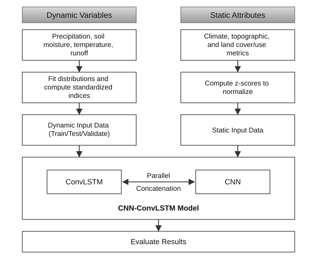

Negative values indicate drier-than-normal conditions; positive values wetter. Color scale fixed to ±3 for comparability across dates and indices. Cells outside the modeling domain are blank.
Standardized Precipitation Index (SPI), Standardized Precipitation Evapotranspiration Index (SPEI), Standardized Soil Moisture Index (SSMI) and Standardized Runoff Index (SRI) all computed with a one month window.
Static physiographic / climatological predictors, constant in time.
Scatter and metrics use every cell × month in the held-out test period; values shown in physical index units (inverse-transformed from the model's scaled target).
Model architecture

The model architecture used to simulate SSMI and SRI is a CNN-ConvLSTM. This architecture combines a Convolutional-Long Short Term Memory model that excels simulating spatiotemporal patterns but that does not efficiently integrated static factors with a Convolutional Neural Network which is well suited to assessing the role of static spatially variable factors.
Permutation feature importance = increase in test RMSE when a feature is shuffled (mean ± std over repeats). Larger = more important. Colored by feature group. Dynamic drought indices are shown as their overall contribution; individual monthly lags are omitted.
Spatial permutation importance: local increase in error (ΔRMSE) when the selected feature is shuffled. Highlights where each predictor matters most.